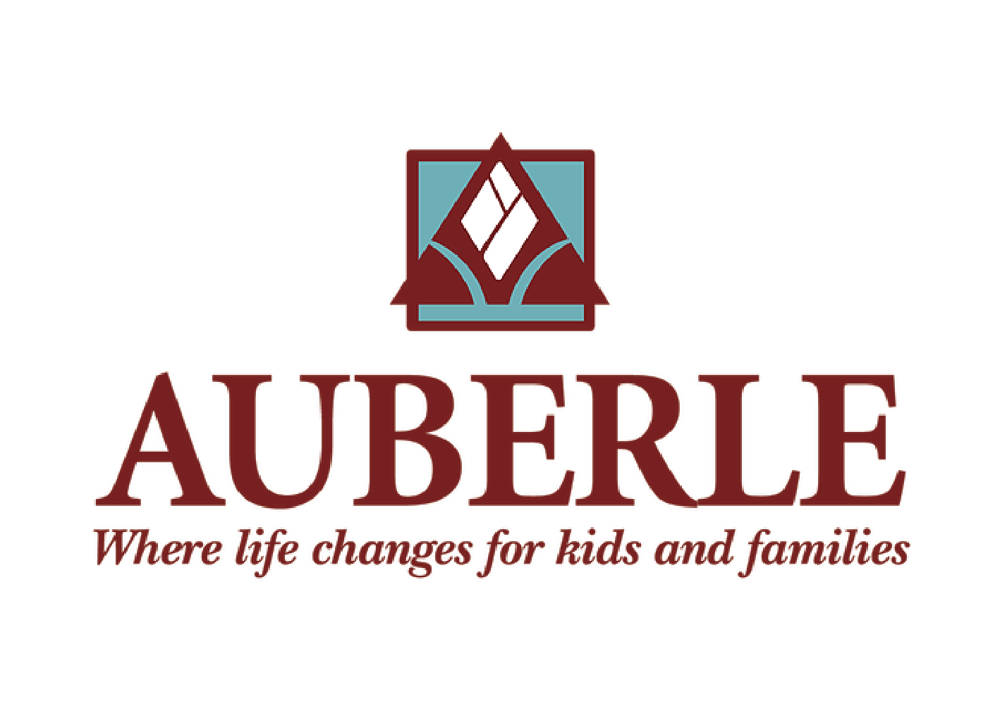

Auberle
Team
- Erin Dieringer
- Matt Gruber
- RhoEun Song
Opportunity
Based on the organization's current practices of communication and data management, the main problem the team identified was how Auberle tracks and manages foster care information and records. Auberle employees make multiple trips a day across Allegheny county without any way of updating information regarding their trips in real time. This sometimes leads to overlapping trips in similar areas for multiple employees. Additionally, there is no centralized database or electronic spreadsheet template to track this information; it is primarily done through email and hardcopy paper submissions. Having an easy way to track these trips would save expenses on gas mileage, vehicle costs, hourly wages, and would most importantly allow other aides or specialists to cover additional trips. Solving this problem would not only give Auberle greater control over the management of case transports, but could also improve potential scheduling conflicts with real-time information.
Outcomes
We have developed a responsive web application using Ruby on Rails that serves to manage not only real-time trip information, but also to manage the children’s overall information and employee’s schedules as well. Through extensive amounts of user testing at least every other week, we received insightful feedback that helped us prioritize features and iterate upon our interface design. Our project is also designed to decrease employee’s time spent on writing mass emails notifying other employees of trip cancellations, trips without drivers, and trip reports.
Deliverables
Our deliverables to Auberle will be our deployed application, the repository to our application, and all documentation for the use and maintenance of the application including our final report. The application is our primary deliverable and we will provide Auberle with the URL and our code repository (through a zip file and GitHub repository). We will also give Auberle thorough documentation of how to use the application and how to maintain it (for technical professionals as well as the entire Auberle staff).